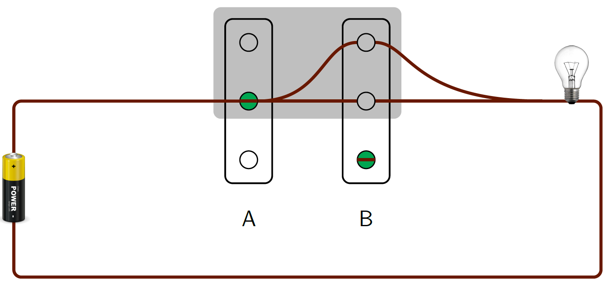
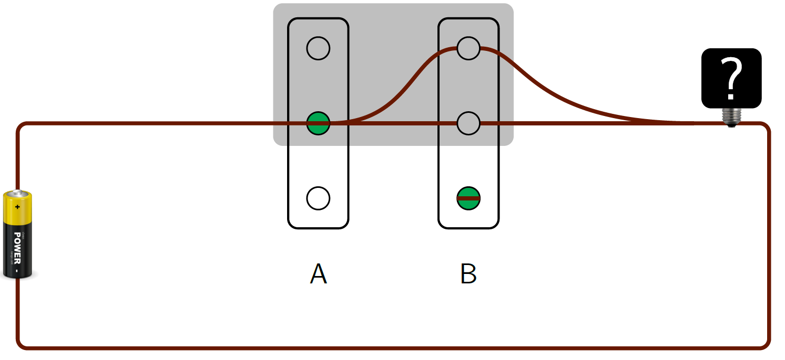
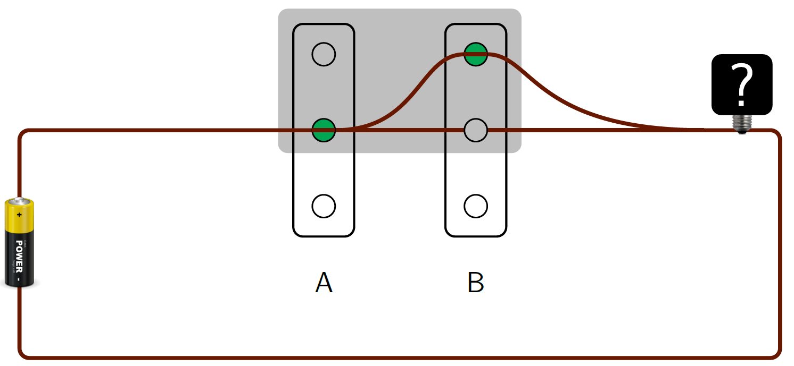
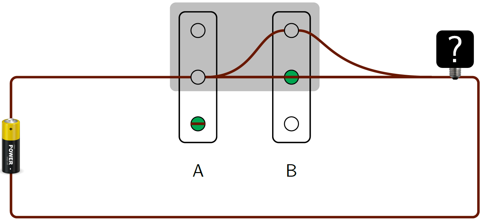
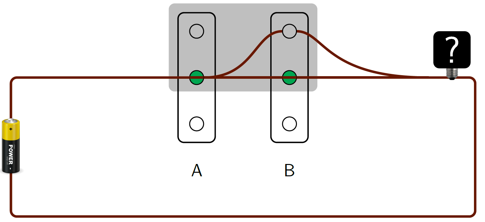
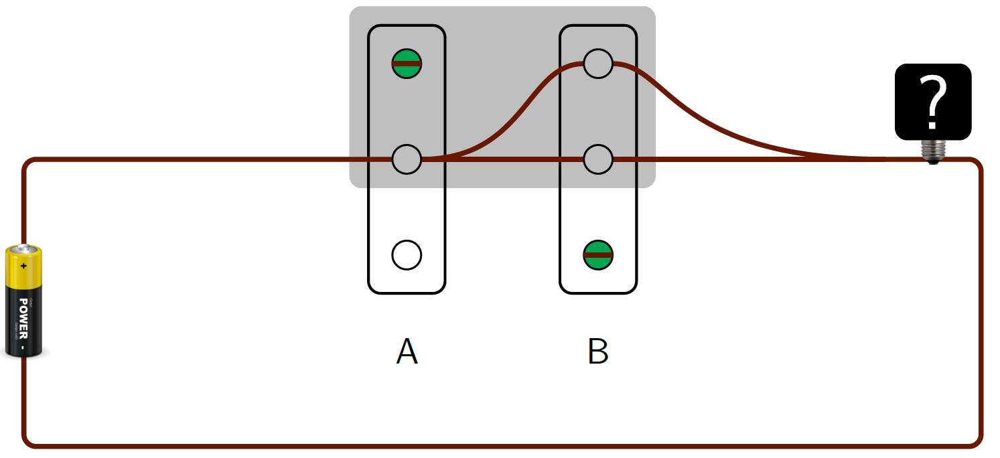

<!DOCTYPE html>
<html lang="en">
<head>
    <meta charset="UTF-8">
    <meta http-equiv="X-UA-Compatible" content="IE=edge">
    <meta name="viewport" content="width=device-width, initial-scale=1.0">
    <title>Document</title>
    <!-- Add JsPsych -->
    <script src="https://unpkg.com/jspsych@7.3.2"></script>
    <!-- Keybord response plugin -->
    <script src="https://unpkg.com/@jspsych/plugin-html-keyboard-response@1.1.2"></script>
    <!-- Image Keybord response plugin -->
    <script src="https://unpkg.com/@jspsych/plugin-image-keyboard-response@1.1.2"></script>
    <!-- Preload plugin to preload images -->
    <script src="https://unpkg.com/@jspsych/plugin-preload@1.1.2"></script>
    <!-- Button Response Plugin -->
    <script src="https://unpkg.com/@jspsych/plugin-html-button-response@1.1.2"></script>
     <!-- Image button response plugin -->
     <script src="https://unpkg.com/@jspsych/plugin-image-button-response@1.1.2"></script>
    <script src="https://unpkg.com/@jspsych/plugin-survey-multi-choice@1.1.2"></script>
    <script src="https://unpkg.com/@jspsych/plugin-survey-multi-select@1.1.2"></script>

    <!-- Style from JsPsych -->
    <link href="https://unpkg.com/jspsych@7.3.2/css/jspsych.css" rel="stylesheet" type="text/css" />
    <link href="local.css" rel="stylesheet"/>
</head>
<body>
    <!-- JsPsych script -->
    <script>
       // Note that participant's response 0 corresponds to Yes and 1 corresponds to No. 
        // Bootstrap
        document.querySelector('head').insertAdjacentHTML("beforeend",'<link rel="stylesheet" href="https://cdn.jsdelivr.net/npm/bootstrap@4.0.0/dist/css/bootstrap.min.css" integrity="sha384-Gn5384xqQ1aoWXA+058RXPxPg6fy4IWvTNh0E263XmFcJlSAwiGgFAW/dAiS6JXm" crossorigin="anonymous">')
        // document.querySelector('head').insertAdjacentHTML("beforeend",'<link rel="stylesheet" href="https://www.tklochowicz.com/assets/causal_css.css" type="text/css">')
        // Initialise and make data display at the end.
        var jsPsych = initJsPsych({
            on_finish: function(){
                jsPsych.data.displayData();
                // window.location = "https://app.prolific.co/"
            }
            });

        // The timeline is an array that contains the set of trials we want to run in the experiment.
        var timeline = [];
        // Prelod all images before the experiment begins to avoid waiting time later. 
        var preload = {
            type: jsPsychPreload,
            images: ['img/md_l.png', 'img/num_test.png', 'img/md_q.png', 'img/dm_l.png','img/mm_l.png', 'img/ud_l.png'] };
            timeline.push(preload);


        var welcome = {
            type: jsPsychHtmlButtonResponse,
            stimulus: ' <p style="margin-top:2%;"><b>Welcome!</b></p><p style="font-size:100%;margin-left:10%;margin-right:10%;">We are Dean McHugh and Tomasz Klochowicz from the University of Amsterdam. At the beginning, we would like to thank you for your participation in this study. It should take you no more than 15 minutes to answer all the questions. </p> <p style="font-size:100%;margin-left:10%;margin-right:10%;">The questions do not have "right" or "wrong" answers. Some of the questions may seem similar, but please answer all of them. The survey does not aim to test your general knowledge. Some of the questions may refer to real people or events, but the stories in the questions are completely made up for the sole purpose of this survey. If a story seems false or implausible to you, try to imagine the situation described by the story. If you have any questions, you can contact us by e-mail at: t.j.klochowicz@uva.nl.</p>',
            choices: ['OK'],
            button_html: '<button class="jspsych-btn" style="font-size:120%;margin-bottom:40px;">%choice%</button>',
            };
        // Push the welcome trial to the timeline
        timeline.push(welcome);

//         var consent = {
//             type: jsPsychHtmlButtonResponse,
//             stimulus: ` 
//                 <div class='row'> 
//                     <div class = 'col consent'>
//                         <h2 style='text-align:center;margin-bottom:2%'>Informed Consent</h2>
//                         <hr>
//                         <p>By clicking the button 'Accept and continue' below you declare that:</p>

//                         <p>You have been clearly informed about the research: NihiL - the neglect-zero effect in modal and nominal domains, research project conducted by Dean McHugh and Tomasz Klochowicz reaserchs at the University of Amsterdam, Institute for Logic Language and Computation, as described in the information brochure displayed at prolific.co. You declare that your questions have been answered to your satisfaction.</p>

//                         <p>You realise that participation in this research is on an entirely voluntary basis. You retain the right to revoke this consent without having to provide any reasons for my decision. You are aware that you are entitled to discontinue the research at any time, and that you can always withdraw your consent after the research has ended. If you decide to stop or withdraw your consent, all the information gathered up until then will be permanently deleted.</p>

//                         <p>If your data are used in scientific publications or made public in any other way, they will be fully anonymised. Your personal information may not be viewed by third parties.</p>

//                         <p>If you need any further information on the research, now or in the future, you can contact Maria Aloni (m.d.aloni@uva.nl) or Tomasz Klochowicz (email: t.j.klochowicz@uva.nl; Universiteit van Amsterdam p.o. box 94242 1090 GE Amsterdam)</p>
//                         <p>If you have any complaints regarding this research, you can contact the secretary of the Ethics Committee of the Faculty of Humanities of the University of Amsterdam; email: commissie-ethiek-fgw@uva.nl; phone number: +31 20 525 3054; Binnengasthuisstraat 9, 1012 ZA Amsterdam.</p>
//                         <p>By clicking the button 'Accept and continue' below you consent to:</p>
//                         <ul>
//                             <li>Participate in this research </li>
//                             <li>Storage and processing of the anonymized data. </li>
//                         </ul>
//                     </div>
//                 </div>
//             `,
//             choices: ['Decline and exit', '<b> Accept and continue</b>'],
//             button_html: '<button class="jspsych-btn" style="font-size:120%;margin-bottom:40px;">%choice%</button>',
//             on_finish: function(data){
//             // Cheeck if consent the response as correct or incorrect.
//             if(data.response == 1){
//             data.correct = true;
//             } else {
//             data.correct = false; 
//             }
//         }
//             };
//             var if_consent_trial = {
//         type: jsPsychHtmlKeyboardResponse,
//         stimulus: "<b>We cannot collect data from you without your consent. </b> </p> <p><a href='https://app.prolific.co/'>Click here to return to Prolific.</a></p>",
//         on_finish: function(){
//             window.location = 'https://app.prolific.co/'
//         },
//     trial_duration: 5000,
//     post_trial_gap: 1000,
//     };

//     var if_consent_node = {
//         timeline: [if_consent_trial],
//         conditional_function: function(){
//             var last_trial_correct = jsPsych.data.get().last(1).values()[0].correct;
//             if(last_trial_correct){
//                 return false;
//             } else {
//                 return true;
//             }
//         }
//     };
//         // Push the welcome trial to the timeline
//         // timeline.push(consent, if_consent_node);
    
//     // Loop until the consent is given. To avoid 'go back' bug: previously it was possible to go back after being redirected and skip that question.
//     var loop_node = {
//     timeline: [consent, if_consent_node],
//     loop_function: function(data){
//         // check if the answer is correct: if it is return false not to repeat again, and if not repeat
//         if(data.values()[0].correct){
//             return false;
//         } else {
//             return true;
//         }
//     }
//     };

// timeline.push(loop_node);

//     var native = {
//         type: jsPsychSurveyMultiChoice,
//         questions: [
//             {
//             prompt: "Are you a native speaker of English?", 
//             options: ['I am a native speaker of English.', 'I am not a native speaker of English.'],
//             required: true
//             }   
//         ],
//         on_finish: function(data){
//         // Score the response as correct or incorrect.
//         if(data.response.Q0 == 'I am a native speaker of English.'){
//         data.correct = true;
//         } else {
//         data.correct = false; 
//         }
//     },
//     // Create a conditional trial, which displays error message when the question about the first languege is answered incorrectly and redirects back to prolific.
//     };
//     var if_trial = {
//         type: jsPsychHtmlKeyboardResponse,
//         stimulus: "<b>Only native speakers of English can participate in this study! </b> </p> <p><a href='https://app.prolific.co/'>Click here to return to Prolific.</a></p>",
//         on_finish: function(){
//             window.location = 'https://app.prolific.co/'
//         },
//     trial_duration: 5000,
//     post_trial_gap: 1000,
// };

// var if_node = {
//     timeline: [if_trial],
//     conditional_function: function(){
//         var last_trial_correct = jsPsych.data.get().last(1).values()[0].correct;
//         if(last_trial_correct){
//             return false;
//         } else {
//             return true;
//         }
//     }
// };
// // Push the question about the native language and redirect if wrong answer
// var loop_node = {
//     timeline: [native, if_node],
//     loop_function: function(data){
//         // check if the answer is correct: if it is reyurn false not to repeat again, and if not repeat
//         if(data.values()[0].correct){
//             return false;
//         } else {
//             return true;
//         }
//     }
//     };

// timeline.push(loop_node);

//Instructions for switches
var switches_inst = {
            type: jsPsychHtmlButtonResponse,
            stimulus:` <div >
                    <p style="text-align:center;">There are two switches, A and B, connected to a light. Part of the circuit is
                        shaded grey. Each switch has three possible positions: up, in the middle, or
                        down. </p> 
                    <p> As the wiring indicates, the light is on just in case switch A is in the
                        middle and switch B is either up or in the middle.</p> 
                        
                    <p>Currently, switch A is in the middle and switch B is down, so the light is off.</p>
                    </img>

                    <p> In each trial of this part of the study you will be presented with the same electrical circuit, but the position of the switches may differ. </p>
                    <p> You will be asked to evaluate whether a sentence describing the picture is true. </p>
                    </div>
                    ` ,
            choices: ['OK'],
            button_html: '<button class="jspsych-btn" style="font-size:120%;margin-bottom:40px;">%choice%</button>',
            post_trial_gap: 400
            };
var switches_inst_2 = {
type: jsPsychHtmlButtonResponse,
stimulus:` 
        <p>Sometimes the light will be covered with a question mark. It means that you need to figure out if the light is on or off.</p>
        </img>

        <p> Consider the following sentence: </p>
         <p style='margin-bottom:4%;font-size:110%;'> <b>The light is off. </b></p>
        <p> In this case you would evaluate is as true, since the swiches do not complete the wiring and the current cannot flow.</p>

        ` ,
choices: ['OK'],
button_html: '<button class="jspsych-btn" style="font-size:120%;margin-bottom:40px;">%choice%</button>',
post_trial_gap: 400
};


// Create feedback trial, which will appear once a trainng item is answered!
var feedback = {
  type: jsPsychHtmlKeyboardResponse,
  trial_duration: 
  function(){
    // Check if the answer was correct
    var last_trial_correct = jsPsych.data.get().last(1).values()[0].correct;
    if(last_trial_correct){
      return 500; // If correct wait .5 sec
    } else {
      return 4000; // If incorrect wait 4 sec
    }
 },
  stimulus: function(){
    // Check if the answer was correct
    var last_trial_correct = jsPsych.data.get().last(1).values()[0].correct;
    if(last_trial_correct){
      return "<p style='font-size:200%;'><b>Correct!</b></p>"; // If correct
    } else {
      return "<p style='font-size:200%;'> <b> Incorrect! </b></p> <p style='font-size:200%;'> Wait 4 seconds and try again!</p>"; // If incorrect.
    }
  },
  choices: ['NO_KEYS'],
}

// Loop the training and feedbac until the correct answer is given.

var switches_train = {
    type: jsPsychHtmlButtonResponse,
    stimulus:jsPsych.timelineVariable('stimulus'),
    choices: ['True', 'Indeterminate','False'],
    button_html: '<button class="jspsych-btn" style="font-size:120%;"">%choice%</button>',
    data: {
        scenario: 'switches',
        question_type: jsPsych.timelineVariable('question_type'),
        // response_type: jsPsych.timelineVariable('response_type'),
        // items: jsPsych.timelineVariable('items')
    },
    on_finish: function(data){
        // Score the response as correct or incorrect.
        if(data.response == jsPsych.timelineVariable('cor_ans')){
        data.correct = true;
        } 
        else {
        data.correct = false; 
        }
    }};


var switches_train_stimuli = [

{ stimulus:` 
 </img>
 
 <p style='margin-bottom:4%;font-size:110%;'> <b>The light is off. </b></p>

` , 
question_type: 'training', 
cor_ans: 2, 
switches_pos: 'mu',
sentence_light: 'off',
},

{ stimulus:` 
 </img>
 
 <p style='margin-bottom:4%;font-size:110%;'> <b>The light is on. </b></p>

` , 
question_type: 'training', 
cor_ans: 2, 
switches_pos: 'dm',
sentence_light: 'on',
},

{ stimulus:` 
 </img>
 
 <p style='margin-bottom:4%;font-size:110%;'> <b>The light is on. </b></p>

` , 
question_type: 'training', 
cor_ans: 0, 
switches_pos: 'mm',
sentence_light: 'on',
},

{ stimulus:` 
 </img>
 
 <p style='margin-bottom:4%;font-size:110%;'> <b>The light is off. </b></p>

` , 
question_type: 'training', 
cor_ans: 0, 
switches_pos: 'ud',
sentence_light: 'off',
},
]

var switches_train_loop = {
    timeline: [switches_train, feedback],
    timeline_variables: switches_train_stimuli,
    randomize_order: true,
    loop_function: function(data){
        // check if the answer is correct: if it is return false not to repeat again, and if not repeat
        if(data.values()[0].correct){
            return false;
        } else {
            return true;
        }
    }
};


// Create the trial that will appear if participants answer "indeterminate"
var indeterminate_trial = {
        type: jsPsychSurveyMultiChoice,
        questions: [{
    prompt: 'You answered "indeterminate" to the last question. Please tell us what you had in mind:',
    options: ["I strongly feel that there is no right answer.", "I just don't know; I am not sure what the answer is."],
    horizontal: false
    }]};
// Only show the indeterminate trial if the answer is "indeterminate"
var indeterminate_node = {
    timeline: [indeterminate_trial],
    conditional_function: function(){
        var last_trial_indet = jsPsych.data.get().last(1).values()[0].indet
        if(last_trial_indet){
            return true;
        } else {
            return false;
        }
    }
};

// Set up switches trial but substitute the value of the parameter in from the timeline variables.
var switches_test = {
    type: jsPsychHtmlButtonResponse,
    post_trial_gap: 400,
    stimulus:jsPsych.timelineVariable('stimulus'),
    choices: ['True', 'Indeterminate','False'],
    button_html: '<button class="jspsych-btn" style="font-size:120%;"">%choice%</button>',
    data: {
        scenario: 'switches',
        question_type: jsPsych.timelineVariable('question_type'),
        // response_type: jsPsych.timelineVariable('response_type'),
        // items: jsPsych.timelineVariable('items')
    },
    on_finish: function(data){
        // Score the response as correct or incorrect.
        if(data.response == 1){
        data.indet = true;
        } else {
        data.indet = false; 
        }
    }, 
    };

var switches_test_stimuli = [

{ stimulus:` 
 </img>
 
 <p style='margin-bottom:4%;font-size:110%;'> <b>If both switches were outside the shaded area, the light would be on. </b></p>

` , 
question_type: 'test', 
condition: 'False',
logical_ans: 2,
switches_pos: 'md',
sentence: 'If both switches were outside the shaded area, the light would be on.',

},
{ stimulus:` 
 </img>
 
 <p style='margin-bottom:4%;font-size:110%;'> <b>If both switches were in the middle, the light would be on. </b></p>

` , 
question_type: 'test', 
condition: 'True',
logical_ans: 0,
switches_pos: 'md',
sentence: 'If both switches were in the middle, the light would be on.',

},
{ stimulus:` 
 </img>
 
 <p style='margin-bottom:4%;font-size:110%;'> <b>If switch B were in the shaded area, the light would be on. </b></p>

` , 
question_type: 'test', 
condition: 'T1',
logical_ans: 0,
switches_pos: 'md',
sentence: 'If switch B were in the shaded area, the light would be on.',

},
{ stimulus:` 
 </img>
 
 <p style='margin-bottom:4%;font-size:110%;'> <b>If switch B were in the shaded area, both switches would be in the shaded area. </b></p>

` , 
question_type: 'test', 
condition: 'T2',
logical_ans: 0,
switches_pos: 'md',
sentence: 'If switch B were in the shaded area, both switches would be in the shaded area.',

},
{ stimulus:` 
 </img>
 
 <p style='margin-bottom:4%;font-size:110%;'> <b>If both switches were in the shaded area, switch B would be in the shaded area. </b></p>

` , 
question_type: 'test', 
condition: 'T3',
logical_ans: 0,
switches_pos: 'md',
sentence: 'If both switches were in the shaded area, switch B would be in the shaded area.',

},
{ stimulus:` 
 </img>
 
 <p style='margin-bottom:4%;font-size:110%;'> <b>If both switches were in the shaded area, the light would be on. </b></p>

` , 
question_type: 'test', 
condition: 'T4',
logical_ans: 3,
switches_pos: 'md',
sentence: 'If both switches were in the shaded area, the light would be on.',

},
{ stimulus:` 
 </img>
 
 <p style='margin-bottom:4%;font-size:110%;'> <b>The light is on just in case switch A is in the middle and switch B is up or in the middle. </b></p>

` , 
question_type: 'filler', 
condition: 'F1',
logical_ans: 0,
switches_pos: 'md',
sentence: 'The light is on just in case switch A is in the middle and switch B is up or in the middle.',

},
{ stimulus:` 
 </img>
 <p style='margin-bottom:4%;font-size:110%;'> <b>The light is currently on. </b></p>

` , 
question_type: 'filler', 
condition: 'F2',
logical_ans: 2,
switches_pos: 'md',
sentence: 'The light is currently on.',

},
{ stimulus:` 
 </img>
 
 <p style='margin-bottom:4%;font-size:110%;'> <b>Switch B is currently in the shaded area. </b></p>

` , 
question_type: 'filler', 
condition: 'F3',
logical_ans: 2,
switches_pos: 'md',
sentence: 'Switch B is currently in the shaded area.',

},
{ stimulus:` 
 </img>
 
 <p style='margin-bottom:4%;font-size:110%;'> <b>Switch B is currently in the middle. </b></p>

` , 
question_type: 'filler', 
condition: 'F4',
logical_ans: 2,
switches_pos: 'md',
sentence: 'Switch B is currently in the middle.',

},
{ stimulus:` 
 </img>
 
 <p style='margin-bottom:4%;font-size:110%;'> <b>A switch is in the shaded area just in case it is up or in the middle. </b></p>

` , 
question_type: 'filler', 
condition: 'F5',
logical_ans: 0,
switches_pos: 'md',
sentence: 'A switch is in the shaded area just in case it is up or in the middle.',

},
];


// 
var switches_test_procedure = {
    // Display fixation cross and then a test stimuli
    timeline: [switches_test, indeterminate_node],
    // link the variables from the stimuli array with the test trial boilerplate
    timeline_variables: switches_test_stimuli,
    randomize_order: true,
    };


var numbers = {
    type: jsPsychHtmlButtonResponse,
    stimulus:jsPsych.timelineVariable('stimulus'),
    choices: ['True', 'Indeterminate','False'],
    button_html: '<button class="jspsych-btn" style="font-size:120%;"">%choice%</button>',
    data: {
        image: 'switches',
        question_type: jsPsych.timelineVariable('question_type'),
        // response_type: jsPsych.timelineVariable('response_type'),
        // items: jsPsych.timelineVariable('items')
    },
    on_finish: function(data){
        // Score the response as correct or incorrect.
        if(data.response == 1){
        data.indet = true;
        } else {
        data.indet = false; 
        }
    }
    };

    var numbers_stimuli = [

{ stimulus:` 
 </img>
 
 <p style='margin-bottom:4%;font-size:110%;'> <b>Kim has a winning hand. </b></p>

` , 
question_type: 'test', 
// context_type: 'neither', 
// response_type: 'Yes', 
// items: 'Big Ben, the London Eye', 
// scenario: 'tourist office', 
// condition: 'false', 

},]


// 
var numbers_procedure = {
    // Display fixation cross and then a test stimuli
    timeline: [numbers, indeterminate_node],
    // link the variables from the stimuli array with the test trial boilerplate
    timeline_variables: numbers_stimuli,
    // randomize_order: true,
    };

// Push the  test precedure to timeline


var candy = {
    type: jsPsychHtmlButtonResponse,
    stimulus:jsPsych.timelineVariable('stimulus'),
    choices: ['True', 'Indeterminate','False'],
    button_html: '<button class="jspsych-btn" style="font-size:120%;"">%choice%</button>',
    data: {
        image: 'switches',
        question_type: jsPsych.timelineVariable('question_type'),
        // response_type: jsPsych.timelineVariable('response_type'),
        // items: jsPsych.timelineVariable('items')
    },
    on_finish: function(data){
        // Score the response as correct or incorrect.
        if(data.response == 1){
        data.indet = true;
        } else {
        data.indet = false; 
        }
    }
    };

    var candy_stimuli = [

{ stimulus:` 
 </img>
 
 <p style='margin-bottom:4%;font-size:110%;'> <b>Kim has a winning hand. </b></p>

` , 
question_type: 'test', 
// context_type: 'neither', 
// response_type: 'Yes', 
// items: 'Big Ben, the London Eye', 
// scenario: 'tourist office', 
// condition: 'false', 

},]


// 
var candy_procedure = {
    // Display fixation cross and then a test stimuli
    timeline: [candy, indeterminate_node],
    // link the variables from the stimuli array with the test trial boilerplate
    timeline_variables: candy_stimuli,
    // randomize_order: true,
    };

// Function to highlight the pictures in the picture-choice scenario
    function mark(picture) {
        var image = document.getElementById(picture);

        if(image.style.outlineStyle === "solid") {
            image.style.outline = "none";
            image.style.outlineRadius = "0px";
        } else {
            image.style.outline = "10px solid green";
            image.style.borderRadius = "25px";
        }
    };
    // Function to randomise the ordering of images in the answers
    function shuffle(array) {
        let currentIndex = array.length,  randomIndex;

        // While there remain elements to shuffle.
        while (currentIndex != 0) {

            // Pick a remaining element.
            randomIndex = Math.floor(Math.random() * currentIndex);
            currentIndex--;

            // And swap it with the current element.
            [array[currentIndex], array[randomIndex]] = [
            array[randomIndex], array[currentIndex]];
        }
  return array;
}
   
    var pictures_2 = {
    type: jsPsychSurveyMultiSelect,
    preamble: `
        <p> Currently switch A is in the middle and switch B is down:</p>
        </img> 
        <p> What would it look like if both switches were in the shaded area? Please click on all matching pictures. </p>
        <p> When you are done click "Continue" at the bottom of the page.</p>
       `,
    button_html: '<button class="jspsych-btn " style="font-size:120%;margin-bottom:4%;">%choice%</button>',
    questions: [{    
    prompt: "",
    // TO DO: Randomise!
    options: shuffle([ 
    "</img>",
    "</img>",
    "</img>",
    "</img>",
    "</img>",
    "</img>",
        ]),
    horizontal: true
    }]};


// Get a random number between 0 and 5
var group = Math.floor(Math.random() * 5);
// timeline.push(switches_inst, switches_inst_2)
// timeline.push(switches_train_loop)
// timeline.push(switches_test_procedure);

//TO DO:add information about the ordering to every trial.

// timeline.push(pictures_1);
timeline.push(pictures_2);


var debrief_block = {
    type: jsPsychHtmlKeyboardResponse,
    trial_duration: 2000,
    stimulus: " <p style='font-size:110%;'> Thank you for taking part in the experiment! </p>  <p style='font-size:110%;'>You will be redirected to prolific to confirm your participation and completion.</p>"
    };
timeline.push(debrief_block);


// Run the timeline
jsPsych.run(timeline);
    </script>
</body>
</html>
